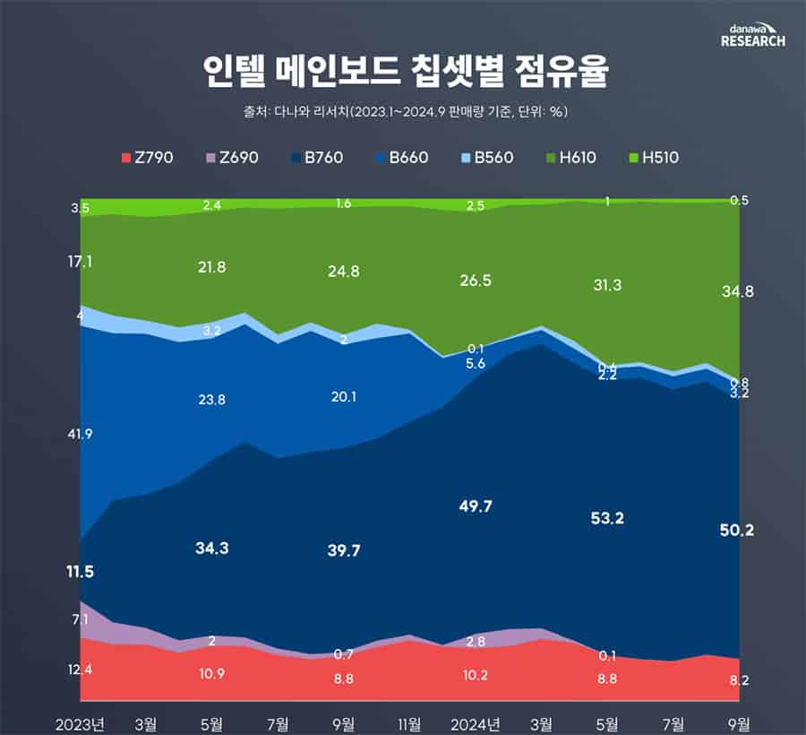
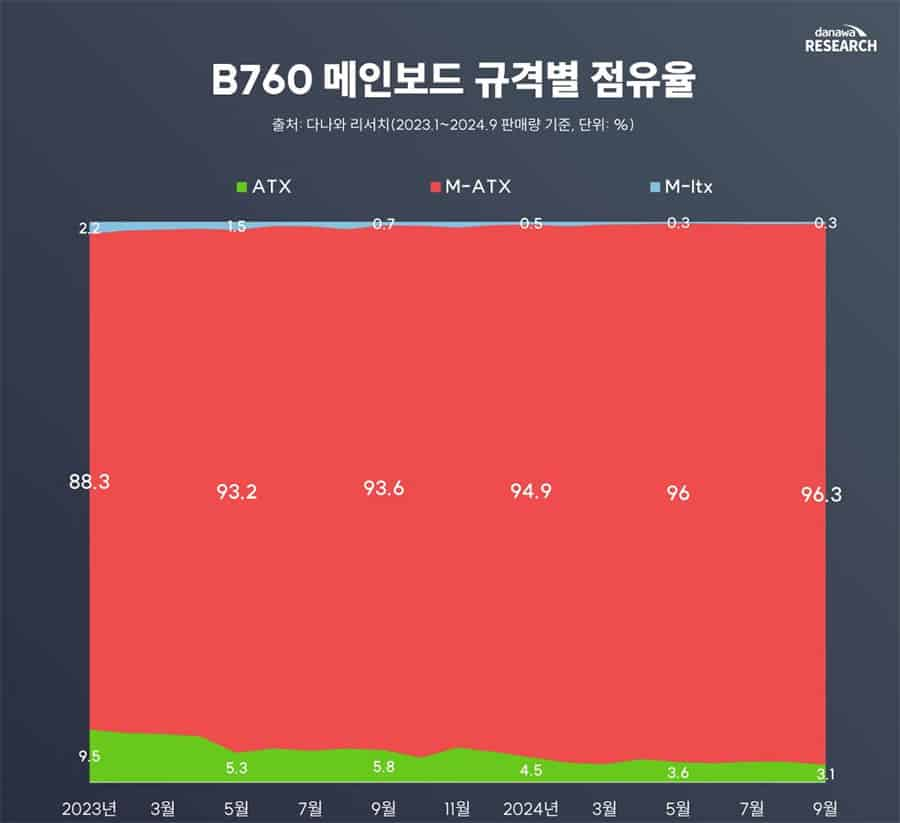

Las ventas de placas base desde Corea muestran la realidad de Intel: la gama media vende casi el 92% y el formato M-ATX se lleva el 96%
Los procesadores son una pieza fundamental en los PC, pues estos se encargan de realizar todas
las tareas y son totalmente necesarios para un uso normal del ordenador. Es por ello, que
adquirir una CPU adecuada para nuestras necesidades es importante y en muchos casos no
necesitamos nada de gama alta. Esto queda más que demostrado si vemos las estadísticas de ventas
de chipsets Intel 600 y 700, donde veremos qué tipo de placa base es la más vendida en Corea.
Intel y AMD son eternos rivales que han estado compitiendo en el sector de los procesadores por
varias décadas. Aunque sean empresas que ofrecen productos similares, su forma de operar y
lanzar nuevos procesadores es totalmente distinta. En el caso de AMD, lleva ya un tiempo donde
los procesadores suelen llegar cada dos años y entre medias de ese tiempo lanza nuevos modelos,
algunos de los cuales, como los X3D, han sido una sorpresa muy positiva. Por otro lado, Intel
saca nuevos procesadores cada año y es algo donde no falla, aunque a veces nos llevamos
decepciones porque no hay muchos cambios.
Así son las ventas de placas base con chipset Intel 600 y 700 en Corea entre 2023 y 2024

Además de lanzar procesadores de forma anual, Intel saca nuevos chipsets y placas base distintas en ese mismo periodo de tiempo. Hace años, esto nos obligaba a tener que cambiar de placa base cada poco tiempo porque no soportaba los antiguos procesadores. Aunque ahora si se alarga más la vida útil de estos, sigue estando por detrás de AMD en este aspecto y sus plataformas no aguantan tantos años, pues AM4 por ejemplo duró más de 6 años. Los procesadores de Intel a partir de los Core 12 son compatibles con los chipsets serie 600 y 700 de Intel, los cuales también funcionan con los Core 13 y Core 14, pero no con los nuevos Core Ultra.
Por tanto, saber las ventas de placas que hacen uso de estos chipsets es algo interesante y ahora tenemos esos datos registrados en Corea por parte de Danawa Research. Podemos ver así una clara preferencia por las placas base de la serie "B" las cuales constituyen más de un 54% de las ventas en 2024, siendo la B760 la más vendida. Le siguen las placas base "H", pues estas constituyen alrededor de un 35% de las ventas totales. Por otro lado, las placas base de la gama "Z" solo forman parte del 8,2% del total en el último mes de 2024.
Las placas base de gama media y el formato M-ATX son las más vendidas con diferencia
 Esta tendencia por comprar placas base de gama de entrada y gama media es totalmente lógica, pues la mayoría de usuarios de PC no quiere gastarse una enorme cantidad de dinero en un ordenador tope de gama para jugar o trabajar. Saben que con lo básico se puede hacer prácticamente de todo y si quieren algo mejor, con una placa base B760 o modelos inferiores, tienen todo lo que necesitan a excepción del overclock. Ahora nos toca ver las ventas de placas base dependiendo del formato y aquí podemos ver algo que no nos esperábamos.
Usando de referencia el mes de septiembre de 2024, podemos ver que el formato ATX supone únicamente un 3,1% de todas las placas base B760 vendidas. M-ITX imaginábamos que iba a ser de nicho, pero tampoco creíamos que solo supondría el 0,3% del total. Al final, las que se llevan toda la atención en Corea son las placas base M-ATX para procesadores Intel con chipset 700, con un abrumador 96,3%.